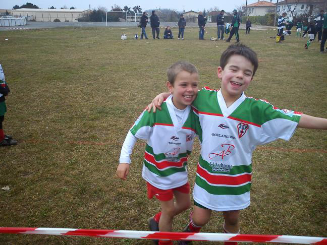
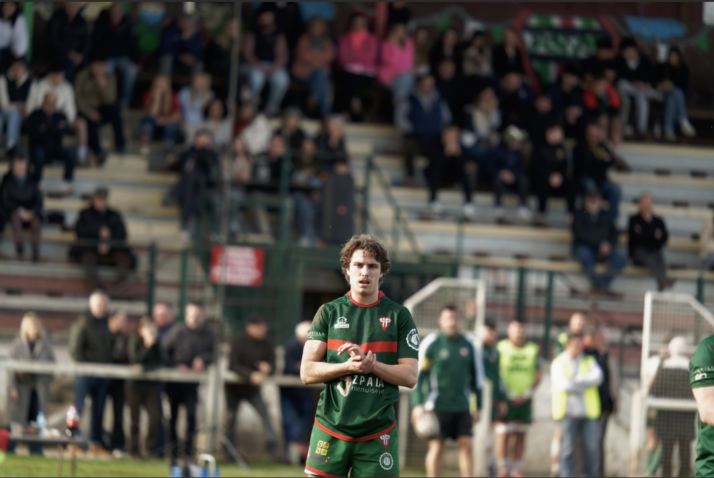
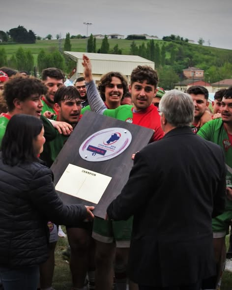
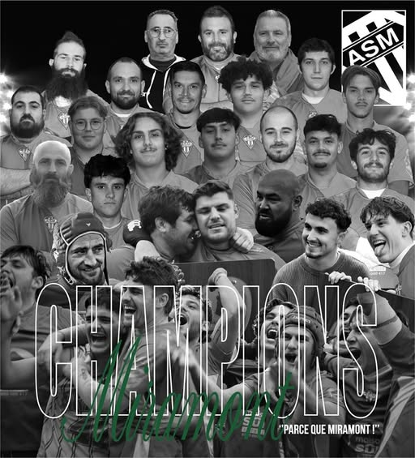

Je suis joueur au sein de l’équipe senior de l’ASM Rugby Miramont-de-Guyenne, le club de mon village et celui dans lequel j’ai grandi. Je pratique le rugby depuis 16 ans, ce qui fait de ce sport un élément central de mon parcours personnel et de mon identité.
Le rugby à Miramont n’est pas seulement une activité sportive : c’est un véritable pilier de la vie locale. Le club rassemble joueurs, bénévoles, supporters et habitants autour d’une passion commune et participe activement à l’animation du territoire. En évoluant dans ce club depuis mon plus jeune âge, j’ai pu vivre et comprendre cette dimension sociale et collective du sport.


J’ai commencé le rugby à l’école de rugby de l’ASM, où j’ai découvert très tôt les valeurs fondamentales de ce sport : le respect, la solidarité, l’entraide et le sens du collectif. Grandir au sein du club m’a permis de construire un véritable sentiment d’appartenance, en évoluant année après année avec des joueurs qui sont devenus bien plus que des coéquipiers.
Aujourd’hui, en tant que joueur senior, je continue à porter les couleurs de mon club avec la même motivation et le même attachement.

La pratique du rugby m’a permis de développer de nombreuses qualités essentielles, autant sur le terrain que dans la vie quotidienne. Ce sport exige une forte capacité de coopération, une grande rigueur dans l’entraînement, ainsi qu’une capacité à se dépasser pour le collectif. Chaque match repose sur la confiance entre les joueurs et sur la capacité de chacun à se mettre au service du groupe.
Au fil des saisons, j’ai également eu l’occasion de vivre des moments sportifs marquants, notamment des phases finales et des victoires importantes pour le club.


Ces moments représentent bien plus qu’un simple résultat sportif : ils illustrent le travail collectif, l’investissement des joueurs, mais aussi l’engagement des bénévoles et des supporters qui font vivre le club au quotidien.
Ainsi, mon rôle de joueur au sein de l’ASM dépasse largement la pratique sportive. Il s’inscrit dans un engagement durable au sein d’un club qui joue un rôle structurant dans la vie locale et qui contribue à mon attachement profond au territoire de Miramont-de-Guyenne.